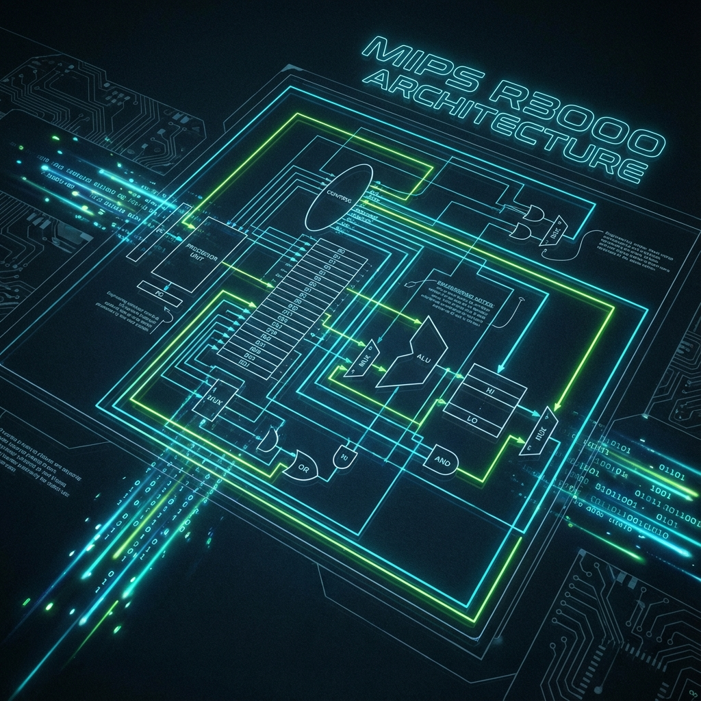

MIPS Processor Simulator
Low-Level Instruction Set Simulation in C
- What I built: A lightweight, robust simulator for the MIPS32 instruction set architecture.
- Why it matters: Provides a transparent view into the Fetch-Decode-Execute cycle and low-level memory management.
- Proof: Correctly executes MIPS machine code binaries on any host machine with cycle-accurate state tracking.
Problem / Goal
Understanding computer architecture requires more than just reading about it. The goal was to build a simulation engine that replicates the core Fetch-Decode-Execute cycle of a MIPS processor in software.
Designed for educational verification, the simulator needed to model the processor's internal state—including registers, program counter, and memory segments—allowing users to trace the execution of assembly code at the bit level.
My Contribution
I implemented the full system architecture in C:
- Memory Model: Simulated the MIPS memory map (Text, Data, Stack segments) with precise addressing logic.
- Execution Engine: Built the main loop to fetch instructions, decode opcodes/operands, and execute ALU operations.
- Syscall & Debug Support: Added support for fundamental system calls (I/O) and a verbose debugging mode to trace execution.
Technical Approach
1. System Architecture
The simulator maintains a strictly defined state:
- Memory Layout: Text Segment (0x00400000), Data Segment (0x10000000), Stack (0x7FFFFFFC).
- Register File: 32 general-purpose registers, correctly handling the immutable $zero register.
2. The Instruction Cycle
The core loop performs three steps for every cycle:
- Fetch: Load 32-bit instruction from memory at PC.
- Decode: Parse opcode, registers (rs, rt, rd), and immediate values using bitwise masks.
- Execute: Dispatch control to the appropriate handler (ALU, Memory Access, Branch).
3. Valid Operations
The simulator supports a functional subset of MIPS32, including:
Validation / Results
The simulator successfully executes compiled MIPS binaries. Compiling with the
`-DDEBUG` flag enables a verbose execution trace, printing the Program Counter, raw hex
instruction, and decoded assembly for every cycle, which is invaluable for debugging compiler
outputs.